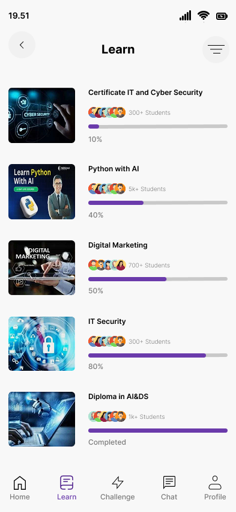
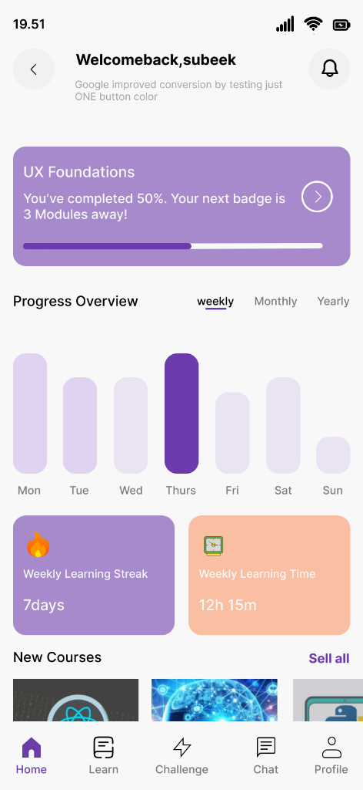
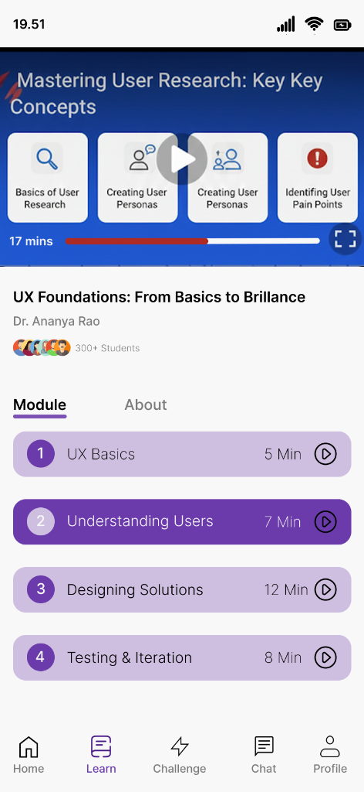

An AI-powered learning platform that helps students discover skills, track their progress through gamified streaks, and connect with peers through integrated chat.



Traditional learning apps often feel like a chore. Students struggle to stay motivated, lose track of their progress across different courses, and feel isolated in their learning journey.
Learnix transforms the learning experience into a gamified, social journey. By integrating progress tracking (Weekly Streaks), deep course analytics (Weekly Learning Time), and a direct peer-to-peer chat system, Learnix ensures that learning is consistent, measurable, and collaborative.
Existing productivity apps (Todoist, Notion, Google Tasks) fail students in three specific ways:
When a dentist appointment and a homework assignment look identical in a list, users lose the mental clarity to prioritize. One is fixed in time; the other is flexible. This difference is critical — and most apps ignore it entirely.
Students use Google Calendar for events, a to-do app for tasks, and a note app for studying. Switching between 3+ apps to manage one day creates cognitive overhead and increases the chance of something falling through the cracks.
Productivity apps aren't built for students. They track tasks, not study sessions. Learnix integrates a Pomodoro-style focus mode into the same system — so studying is tracked alongside tasks and events, not in a separate app.
Students can't see how productive they've actually been. Without a daily/weekly stats view, they can't reflect, improve, or feel the satisfaction of progress — a key driver of sustained motivation.
I conducted targeted research including app store review analysis (Todoist, Any.do, Notion), secondary behavioral research on student productivity habits, and synthesized a primary user persona grounded in realistic pain points.
Age: 21 · Role: University Student (2nd Year) · Devices: iPhone + MacBook
Aisha is an engineering student managing 6 courses, 3 clubs, and a part-time tutoring job. She's tried every productivity app, but keeps reverting to paper because digital apps "feel confusing." She needs her tasks and schedule to live in one focused, clean place — and she needs the system to tell her what's urgent vs. what's flexible.
✅ 67% of students who use productivity apps abandon them within 2 weeks due to complexity.
✅ Color-coding significantly reduces cognitive load when differentiating item types — this became Learnix's primary UX mechanism.
✅ Students want a single entry point for everything — not separate apps for tasks, calendar, and focus timer.
✅ Progress stats (streaks, weekly completion rate) increase sustained app usage by up to 40% in habit-forming apps.
The Learnix design process moved from defining the core problem → building information architecture → wireframing → visual system → high-fidelity screens.
Problem Define
IA & Flows
Wireframes
Design System
High-Fi UI
Prototype
Learnix uses a purple-primary palette that conveys creativity and calm simultaneously — ideal for a student productivity context. The system is built around three semantic colors that carry meaning throughout the entire app.
Green — Completed tasks. Instant satisfaction signal.
Cyan — Time-bound events. Fixed. Non-negotiable.
Purple — Pending tasks. Flexible. Do when ready.
The type system uses a modern sans-serif (Outfit) for headings and UI labels, creating a clean, contemporary feel without the coldness of purely system fonts.
UI components are consistently rounded (12-16px radius), creating a soft, approachable feel that reduces the anxiety often associated with rigid academic productivity tools.
Clear visual and semantic separation between flexible tasks and fixed-time events — the core innovation that removes planning confusion.
A single calendar that overlays both tasks and events, colour-coded — so you see your entire day/week at a glance without switching apps.
Built-in 25-minute focus sessions with breaks — linked directly to specific tasks so every timer session has a purpose and logs to your stats.
Weekly and daily stats showing tasks completed, events attended, and focus time — so progress is always visible and rewarding.
3-level priority system (High, Medium, Low) that sorts your task list automatically — so the most urgent work is always at the top.
Designed dark-first — because students do their best work at night. The deep purple palette reduces eye strain during late study sessions.
The tension: The app's core concept (tasks ≠ events) is powerful — but it requires the user to understand a new mental model during onboarding.
Decision: I designed a 3-screen onboarding flow that uses real-world analogies ("A homework assignment is flexible. A lecture is not.") combined with interactive examples to make the distinction click instantly — before the user adds their first item.
The tension: Should the home screen be a task list (like Todoist) or a calendar (like Fantastical)?
Decision: I created a hybrid — a list view as the primary home, with the calendar accessible via a tab. Research showed students primarily think in terms of "what do I need to do" (list) before "when" (calendar). This matches their natural mental model.
The tension: Every feature request (habit tracking, flashcards, notes) seemed valid. But adding everything would turn Learnix into another overwhelming super-app.
Decision: I ruthlessly cut anything that didn't serve the core problem. Learnix does 3 things excellently: task/event management, focus timing, and progress tracking. Nothing more.
The tension: The entire Learnix UX relies on color to convey meaning — but ~8% of users have some form of color blindness.
Decision: I paired every color semantic with a secondary icon indicator (checkmark for done, clock for events, dot for pending) so the UI never relies on color alone. The design passes WCAG AA contrast standards throughout.
Learnix was validated through peer design reviews and a structured heuristic evaluation against Nielsen's 10 Usability Heuristics, scoring well in Visibility of System Status, User Control, and Aesthetic/Minimalist Design.
1x
App for Tasks, Events & Focus — Unified
3-Color
Semantic System That Eliminates Confusion
WCAG
AA Accessible Color Contrast
The biggest gap is the absence of real user testing. I'd recruit 8-10 university students and run moderated usability sessions to validate whether the Task/Event distinction actually feels intuitive in the wild — or if the onboarding needs further clarity.
If I had access to beta user data, I'd lead with concrete results: "X% fewer missed deadlines" or "Y minutes saved per day." Going forward, I'd design a built-in feedback mechanism from day 1 to collect these metrics from real users.
The visual design is strong, but I'd invest heavily in micro-animations — the satisfying "pop" of completing a task, the smooth transition from task to event view, the progress fill on the focus timer. These micro-moments are what make productivity apps feel rewarding to use daily.
Students don't just work alone — they have group projects, shared events, and study groups. A v2 of Learnix would explore shared task lists and group calendars as a natural extension of the core, without adding complexity to the solo experience.